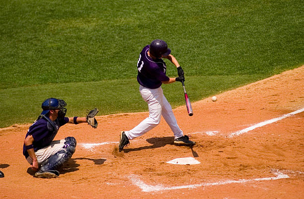
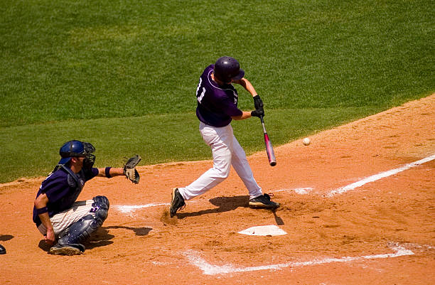

El fútbol es un deporte que se juega entre dos equipos de once jugadores cada uno, con el objetivo de marcar más goles que el equipo contrario. Es el deporte más popular del mundo y se practica en casi todos los países. También conocido como soccer en algunos lugares, el fútbol se juega en un campo rectangular con una portería en cada extremo. Los jugadores pueden usar cualquier parte de su cuerpo, excepto sus manos y brazos, para mover el balón, que es esférico. El juego se lleva a cabo en dos tiempos de 45 minutos cada uno, con un descanso intermedio. El fútbol promueve la habilidad técnica, el trabajo en equipo, la estrategia y la condición física. Es un deporte que inspira pasión en millones de personas en todo el mundo y es conocido por su capacidad para unir a personas de diferentes culturas y orígenes en torno a una pasión común.
 
